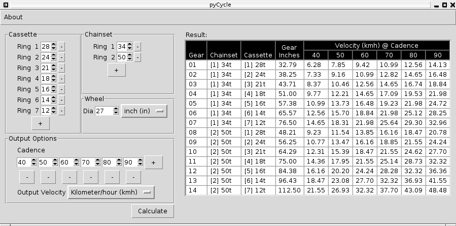

pyCycle
A utility to calculate gear inches and achievable speeds at given cadences by entering bicycle gearing data and wheel size.
pyCycle is free software licensed under the GPL v3 License

A utility to calculate gear inches and achievable speeds at given cadences by entering bicycle gearing data and wheel size.
pyCycle is free software licensed under the GPL v3 License